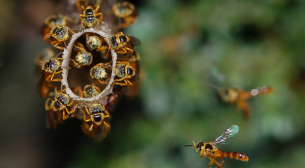
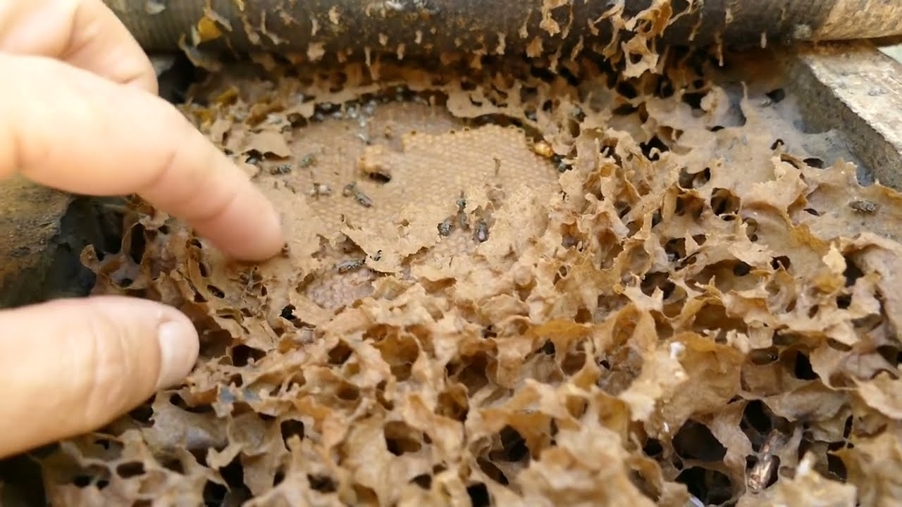

Comportamento
As Jataís geralmente trabalham de dia e de noite fecham a entrada da colmeia com um tipo de cera,
algumas abelhas se posicionam na entrada da colmeia para reforço da segurança.


Defesa
As abelhas jataí se defendem de várias forma mesmo não tendo ferrão, elas podem morder o predador ou
tentar intimidá-lo,
a posição de sua colmeia que fica embaixo da terra também é vantajoso para a camuflagem da colônia.
Colmeia
Faz o ninho na terra como o nome sugere, aproveitando a estrutura de formigueiros abandonados. Diferente
das abelhas melíferas, que constroem seus favos em células hexagonais, as jataís-da-terra organizam suas
células em uma estrutura espiral.